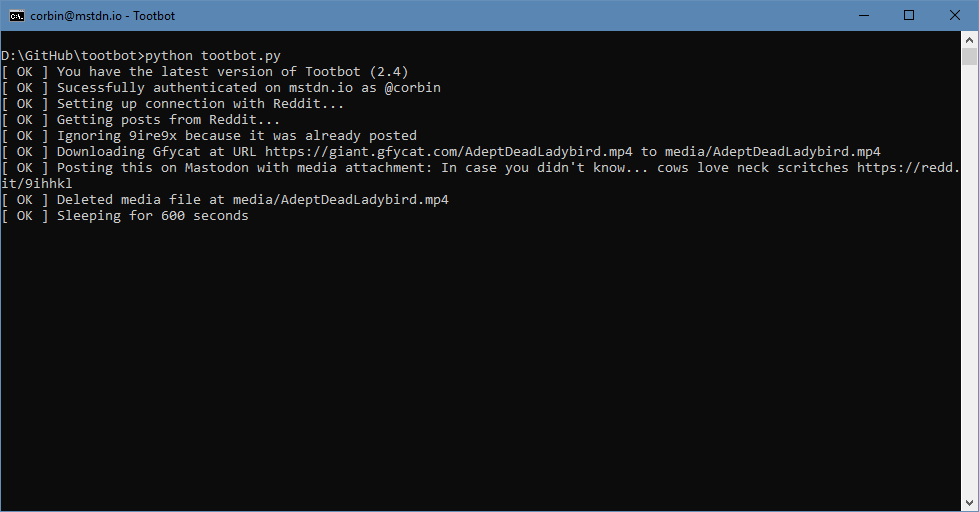

Tootbot is a Python tool for reposting Reddit content to Twitter and Mastodon. Earlier this year, I added the ability to run Tootbot in the cloud for free with Heroku, which caused the amount of accounts using it to skyrocket.
Tootbot 2.4 is now available, with major improvements for Mastodon posting and updated documentation for Twitter posting. Here’s whats new:
The Tweepy API, which is used by Tootbot to make posts to Twitter, doesn’t support uploading videos - only GIFs 3MB or smaller. Because of this limitation, Tootbot could only post low-quality GIFs/video encodes, not the high-quality MP4 versions of videos and GIFs that you would see on Reddit.
The Mastodon API never had this limitation (it supports videos up to 8MB), but I wanted to use the same code for both platforms to keep the codebase simple. Over the past few months, I’ve been emailed by a few Mastodon bot admins that asked me to fix this, so I finally sat down and implemented it.

As of version 2.4, Tootbot now uploads high-quality MP4 files to Mastodon instead of low-quality GIFs. This only applies links from Imgur, Giphy, and Gfycat (as well as direct links to .mp4 files). Posts to Twitter are still low quality, but there might be a way to fix that in the future.
Reddit-hosted videos are also supported by Tootbot, but the Mastodon API appears to have issues with the file format Reddit uses. I’m not yet sure what is required to fix this, but the vast majority of GIF/video links on Reddit are still using Imgur and Gfycat.
I’ve spent some time trying to simplify the codebase in version 2.4. I’ve split up some functions and updated variable names, so it should be easier for new contributors to modify Tootbot.
I’ve also fixed a few bugs, including one where some Imgur GIFs would fail for Twitter posts.
If you currently operate a Twitter account that uses Tootbot, you must apply for a Twitter Developer Account. If you don’t, Twitter will eventually shut off your API access.
There’s a wiki page with instructions for upgrading existing accounts to the new dashboard. For anyone creating a new account for Tootbot, the Heroku and local setup guides have already been updated with the new instructions.
You can see the full changelog for Tootbot 2.4 (and download the update) on GitHub here. If you find any bugs, please leave an issue.